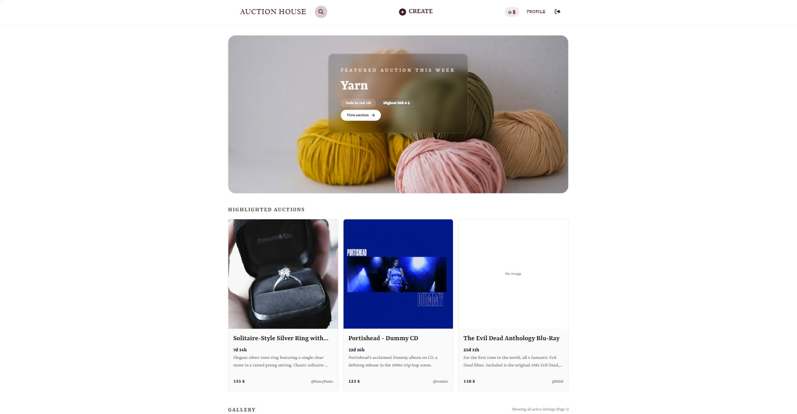

Semester Project 2
Auction House

About the project
Auction House is a fully functional auction application developed for Semester Project 2 using the Noroff Auction API.
The application allows users to register and log in, manage their profile, create and manage auction listings, browse active auctions, and place bids.
The project brought together authentication, API communication, dynamic rendering, bidding functionality, and conditional UI logic in one larger frontend application. It gave me more experience working with interconnected systems and structuring a more complex JavaScript project.
Key Features
- User registration and authentication
- Profile management
- Create, edit and delete auction listings
- Browse active auctions
- Place bids on listings
- Dynamic rendering of API data
- Conditional UI based on authentication state
Portfolio Improvements
As part of Semester Project 2, I revisited the Auction House application to improve accessibility, user experience, user feedback, and the overall presentation of the application.
The improvements focused on refining existing functionality, providing clearer user feedback, improving accessibility, and cleaning up the code base.
- Improved the accessibility with clearer ARIA labels and mobile menu states.
- Added a close button to the search modal and improved focus handling when closing it.
- Fixed an issue where bid confirmation messages disappeared after the listing was updated.
- Added temporary bid success feedback and improved accessibility using role="status".
- Improved hover and keyboard focus styling on auction cards.
- Added more descriptive auction countdown text for screen readers.
- Fixed text contrast in the bidding section.
- Updated page titles, metadata, and favicons.
- Removed unnecessary console logging in selected parts of the application.
Technologies Used
- HTML
- Tailwind CSS
- JavaScript (ES6 Modules)
- Cloudinary
- Noroff Auction API